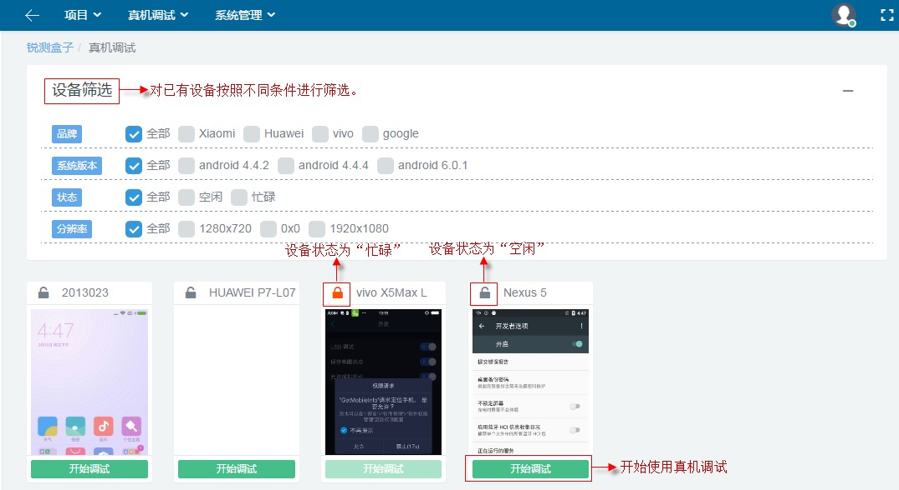
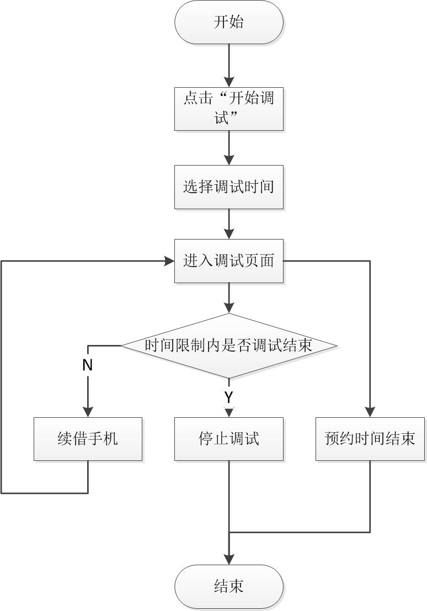
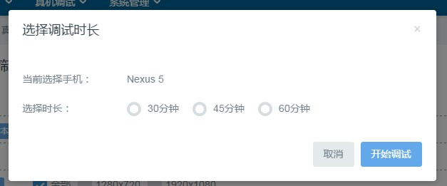
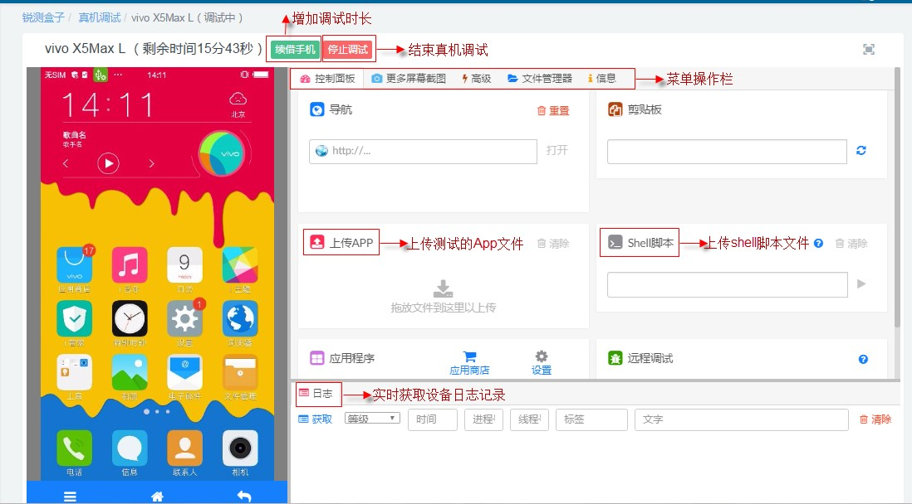

2.5 真机调试
用户凭借账号信息以及用户身份登录本系统后，找到系统的顶部导航栏中“真机调试”菜单项，点击“新建调试”即可进入真机调试功能页面，操作本系统提供的设备。操作页面和操作业务流程如下二图所示。

真机调试操作页面图

真机调试业务流程图
(1) 点击“开始调试”按钮，选择调试时间，进入设备调试界面。如下图所示。

真机调试选择时长页面图
(2) 用户可以在设备调试页面选择上传APP、截图、使用shell脚本以及实时查看操作日志。如下图所示。

真机调试操作页面图